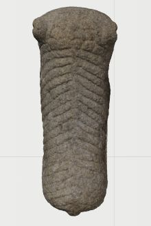
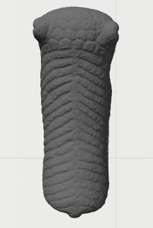
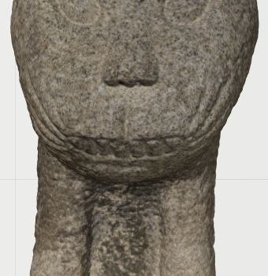
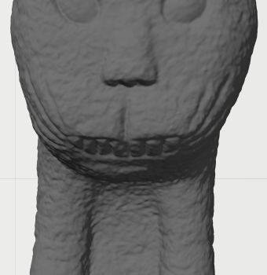

목 뒤에서 등으로 이어지는 선


목 뒤부터 등을 가로지르는 선의 방향과 이어지는 굴곡을 비교했습니다. 표면색과 구분해 보니 반복되는 선의 흐름에 집중할 수 있었습니다.
Index · 01
두 석사자의 형태와 표면을 휴대용 3D 스캐너로 기록하고, Artec Studio에서 각각의 3D 모델로 정리했습니다.

석사자 주변을 이동하며 여러 각도에서 형태와 표면색을 스캔했습니다.
Artec Studio에서 겹치는 부위를 맞추고, 여러 스캔을 하나의 모델로 합쳤습니다.
모델을 돌려 보며 문양과 표면을 확인하고, 함께 찍힌 지면과 비어 있는 부분을 살폈습니다.
수사자의 같은 부위를 컬러 보기와 무채색 음영 보기로 나란히 살폈습니다. 돌의 입자와 얼룩에 겹쳐 보이던 선을 형태의 굴곡으로 구분해 볼 수 있습니다.


목 뒤부터 등을 가로지르는 선의 방향과 이어지는 굴곡을 비교했습니다. 표면색과 구분해 보니 반복되는 선의 흐름에 집중할 수 있었습니다.


입가 양옆에서 휘어 올라가는 선과 턱 아래의 경계를 살폈습니다. 무채색 음영에서는 색의 얼룩과 별개로 표면의 높낮이를 따라갈 수 있습니다.
같은 3D 형상과 시점에서 캡처한 실제 Index 화면입니다. 컬러 보기와 무채색 음영 보기는 재질과 조명 설정이 다릅니다.